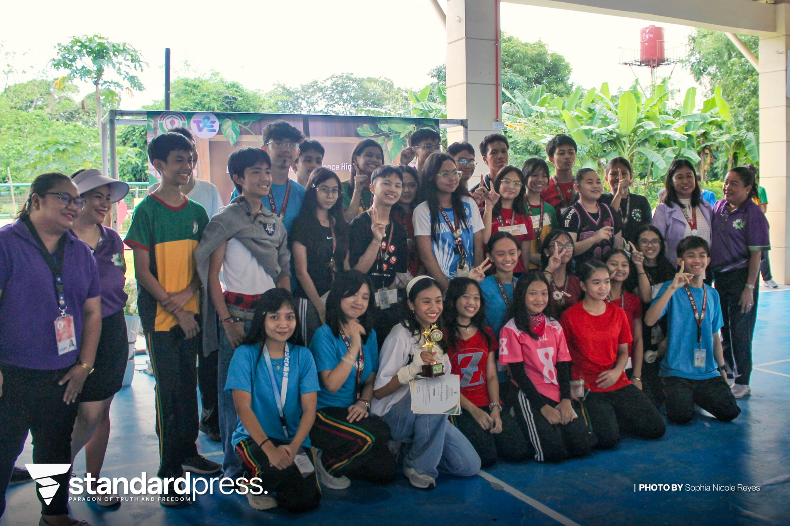

Main Page
Main Page  ICT
ICT  AP
AP A. Documentation
Credits: Lpress

Credits: Micah Jimenez
Credits: Micah Jimenez
B. Reflection
The greatest thing I learned from this event is probably the importance of teamwork and perseverance. We won nutrichant because we all kept practicing and worked hard. I will apply this in my everyday life by staying strong and giving all my effort in all the challenges that we face so that we would be successful.
In this event, especially in the nutrichant, I worked more on the instruments part. I played the piano.
If I were to explain this topic to others, nutrichant is one of the major activities in TLE month. Nutrichant required the effort and cooperation of all. Everyone gave their best and worked hard, which is how we were able to win.
Each subject needs to have its own event so that we will really learn, and also have fun. TLE month, or Nutrition month was really important as it gives focus on educating us to get the right nutrition. But aside from these, we were also able to learn values such as perseverance, team work, and many others.